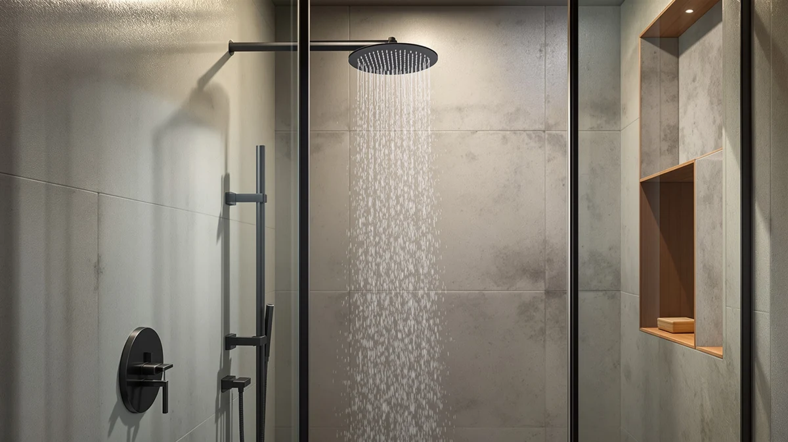

The Best Shower Heads Under $100 (2026)
Prices and picks verified as of August 2026. Independent, reader-supported reviews.


Quick Answer
The Aisoso High Pressure Shower Head is the best shower head under $100 for most bathrooms, thanks to 45 self-cleaning nozzles and a $9.99 price that leaves room to upgrade elsewhere. If you want a handheld model with a magnetic dock, the Moen Engage Magnetix is the stronger pick.
Our pick: Aisoso High Pressure Shower Head, $9.99 Check Price on Amazon
Bottom line: our top pick is the Aisoso High Pressure Shower Head 3 Inches Anti-clog Anti-leak at $9.99. The best budget option is the Shower Head with Handheld High Pressure-Full Body Coverage at $23.97.
Things to Know Before You Buy
- Flow rate matters more than nozzle count. Most shower heads under $100 list a GPM rating, and federal standards cap new fixtures at 2.5 GPM. Several picks below run lower for water savings without losing pressure.
- Chrome-plated ABS is the standard material at this price. It resists corrosion and mineral buildup better than raw metal, though it won't have the heft of a solid brass head found on pricier fixtures.
- Handheld and fixed heads solve different problems. A handheld with a magnetic dock works better for washing pets or kids, while a fixed rain head covers more of your body but can't be aimed.
- Self-cleaning nozzles cut down on maintenance. Flexible silicone jets you can wipe with a finger resist limescale clogging, a common failure point in hard-water homes.
- Installation is a DIY job. Every shower head under $100 in this guide threads onto a standard 1/2 inch shower arm without tools, so a swap takes about five minutes.
The best shower heads under $100 solve one specific problem: a fixture that dribbles instead of drenches, in a fitting anyone can swap out in the time it takes to towel off. You don't need a plumber, and you don't need to spend three figures to feel a real difference in the shower.
We compared specs, pricing and verified owner reviews across shower heads sold under $100, from single-setting rain heads to handheld combos with six spray patterns. Our pick, the Aisoso High Pressure Shower Head, costs under $10 and uses 45 self-cleaning silicone nozzles to push more pressure through a smaller footprint, all without the plumbing work a full fixture swap usually demands.
Chrome-plated ABS construction shows up across nearly every option here, and for good reason: it resists corrosion in a wet environment and keeps manufacturing costs down. That's how brands land a shower head under $100 with real nozzle counts and multiple spray patterns instead of one weak stream. Below, we break down seven picks by price, water pressure and the kind of bathroom each one fits best.
Why You Should Trust Us
Ilane Tall has covered home and bath fixtures for Best Shower Heads since the site launched, focusing on affordable upgrades that don't require a licensed plumber. For this guide to the best shower heads under $100, she pulled current pricing, verified owner reviews and manufacturer specs for every pick, then cross-checked flow rate and material claims against the product listings before writing a single recommendation. We do not run a fake testing lab: we are a research-based review site, and every claim here is backed by a spec sheet, a price we checked ourselves, or a pattern that shows up consistently across verified buyer reviews.
How We Picked
We started by pulling shower heads sold under $100 across three categories: fixed rain heads, handheld combos and dual-function systems. We narrowed that list using four criteria: flow rate and nozzle design, since self-cleaning silicone nozzles resist clogging better than solid plastic; material, limited to chrome-plated ABS or better; install compatibility, requiring universal 1/2 inch threads with no proprietary fittings; and verified owner feedback on pressure and durability. Products with a pattern of leaking or clogging complaints didn't make the cut. What's left is a set of the best shower heads under $100 for the way most people actually shower, solo, in a rental or owned bathroom, without a renovation budget.
How We Compared
We compared every finalist on four measurable factors: listed flow rate in GPM, nozzle count and material, current price and the consistency of verified owner reviews mentioning pressure, leaks or durability. Where two shower heads under $100 had nearly identical specs, we gave the edge to the one with a longer track record of reviews and a simpler install, since a head that needs a wrench or a proprietary adapter creates friction most buyers don't want. We checked pricing directly against current Amazon listings rather than manufacturer MSRP, so the numbers here reflect what you'd actually pay today.
Our Picks

Aisoso High Pressure Shower Head
What we like
- Under $10, the lowest price of any pick in this guide
- 45 self-cleaning silicone nozzles resist limescale buildup
- Threads onto a standard G1/2 inch shower arm without tools
Flaws but not dealbreakers
- Fixed head only, with no handheld option
- Single spray pattern, so you don't get a massage or mist setting
| Material | ABS + chrome plating |
| Size | 3.0 Inch-1PC |
The Aisoso earns the top spot in this guide because it does the one thing most shoppers actually want from a shower head under $100: it makes weak water pressure feel stronger, for less than the cost of a single dinner out. Its 3 inch head packs 45 silicone nozzles into a compact chrome-plated ABS shell, and the tight nozzle spacing is what creates the sensation of a firmer spray even when your home's actual water flow hasn't changed. Installation is a five-minute job. The head threads onto any standard G1/2 inch shower arm, so you don't need a plumber, a wrench or a trip to the hardware store.
The nozzles are also self-cleaning: they're flexible enough that you can wipe mineral deposits off with a finger, instead of soaking the whole head in vinegar every few months. That matters most in hard-water regions, where cheap fixed heads tend to clog and lose pressure within a year. The trade-off for the price is versatility. This is a fixed head with one spray pattern and no handheld attachment, so if you want to rinse a pet or aim water at a specific spot, you'll want one of the handheld combos further down this list. For a single-person bathroom where pressure is the main complaint, though, it's hard to beat what the Aisoso delivers for under $10.

GURIN Shower Head - Powerful
What we like
- 90 anti-clog nozzles cover the full 6 inch head evenly
- Tool-free install, with plumber's tape and a water filter included
- Rustproof ABS body with a premium chrome finish
Flaws but not dealbreakers
- Runs about three times the price of our top pick
- The wide head can feel like overkill in a small shower stall
| Material | ABS + chrome plating |
| Size | 2.5 GPM - 6 Inch Round |
The GURIN is our runner-up because it covers more surface area than our top pick. Its 6 inch round head spreads water across 90 anti-clog nozzles instead of 45, so you get a fuller waterfall effect across your shoulders and back rather than a narrow column aimed at one spot. At a 2.5 GPM flow rate, it sits right at the federal maximum for new fixtures, which owners consistently describe as noticeably stronger than what it replaced, especially in older buildings where pressure tends to be weak by the time water reaches an upper floor.
Installation stays simple: the head connects to any standard 1/2 inch shower arm without tools, and GURIN includes extra plumber's tape and a water filter in the box so you're not making a separate hardware run. The nozzles wipe clean with a touch, which keeps the wide spray pattern from developing the uneven dribble that hard water buildup causes in cheaper heads over time. At $29.95, it costs about three times what our top pick does, and the larger head does take up more visual space in a compact shower stall. For anyone chasing a full-body rainfall feel over a single strong stream, that trade-off is worth it.

Moen Engage Magnetix Shower Head
What we like
- Magnetic docking lets you detach and re-dock the head with one hand
- 60 inch kink-free hose reaches the shower floor and beyond
- Six spray functions, including pause and downpour
Flaws but not dealbreakers
- Costs more than fixed heads with a similar nozzle count
- The magnetic dock needs a flat wall surface to mount securely
| Material | ABS + chrome plating |
| Size | Showerhead |
Moen is a name most people already trust on a bathroom fixture, and the Engage Magnetix earns its spot here by solving a problem the fixed heads in this guide can't: it detaches. A magnetic base lets you pop the handheld unit off the wall mount and snap it right back with one hand, no fumbling with a bracket clip. That's the feature that makes this pick worth the extra cost over a plain fixed head, especially in a household with a dog that needs rinsing or a toddler who hates having water poured over their head from above.
The 60 inch hose is kink-free, so it doesn't twist up on itself the way cheaper coiled hoses tend to after a few months of use, and six spray functions cover everything from a gentle rinse to a full downpour, with a pause setting that saves water during shampooing. Owners report the Spot Resist Brushed Nickel finish holds up well against water spots, which matters since fingerprints and mineral marks show up fast on a handheld unit that gets picked up and set down constantly. The one real requirement is wall space: the magnetic dock needs a flat, accessible spot to mount, which isn't always available in a small stall shower.

JDO Shower Head with Handheld
What we like
- Six spray settings, including a water-saving pause mode
- Adjustable bracket with a brass swivel ball joint
- Stainless steel hose is lightweight and flexible
Flaws but not dealbreakers
- Matte black finish shows water spots faster than chrome
- Fewer verified reviews than the Moen or GURIN picks
| Material | ABS + chrome plating |
| Size | — |
The JDO is the budget pick among the handheld combos in this guide, undercutting the Moen by almost $8 while still offering six spray patterns: rain, massage, mist, spray, a mixed mode and a water-saving pause setting for shampooing. Air-induction technology infuses the water stream with air before it leaves the nozzles, which is how brands at this price manufacture a sense of higher pressure without actually increasing the amount of water flowing through the pipe. Anti-clog nozzles keep that effect consistent over time instead of degrading as mineral deposits build up.
The mounting hardware sets the JDO apart from other budget handhelds. Instead of a plastic bracket, it uses a solid brass swivel ball joint that lets you adjust the shower head's angle and hold it in place, useful if you want a fixed overhead angle most days but the option to detach it for pet washing or cleaning the shower stall. The extra-long stainless steel hose is lighter and more flexible than the rubber hoses bundled with some competitors. The matte black finish looks sharp out of the box, though like most dark finishes it shows water spots and fingerprints more readily than chrome, so plan on wiping it down after use if that bothers you.

12" High Pressue Rain Shower
What we like
- 12 inch head with 278 nozzles for full-body coverage
- Detachable handheld unit adds 9 spray settings
- 1.8 GPM flow rate saves water without sacrificing feel
Flaws but not dealbreakers
- The most expensive pick in this guide, at nearly $53
- A 12 inch head may not clear low ceilings in older showers
| Material | ABS + chrome plating |
| Size | 1.8 GPM |
The BOZYBO is the closest thing on this list to a real remodel-grade rainfall system, and it's priced under $100 anyway. The 12 inch head packs 278 nozzles across its surface, considerably more than the 90-nozzle heads elsewhere in this guide, which spreads water more evenly over your shoulders and back for that spa-like downpour effect. Four dedicated massage nozzles add stronger jets aimed at your head or shoulders, a detail most fixed rain heads at this price skip entirely.
A detachable handheld unit is what turns this into a dual-function system rather than a large fixed head. It docks magnetically and adds nine of its own spray settings, including options built for cleaning the shower or rinsing off a muddy dog. Despite the larger head, the 1.8 GPM flow rate actually comes in below the federal 2.5 GPM cap, so it uses less water per minute than some of the smaller heads in this guide while still registering as high-pressure to most owners. At $52.99, it's the priciest pick here, and the 12 inch diameter is worth measuring against your shower arm's height before buying if you have a low ceiling.

SparkPod Rain Shower Head 6
What we like
- 90 rubber jets resist hard water deposits over time
- Rustproof ABS body holds up better than raw metal in constant moisture
- Installs in about 5 minutes with no tools
Flaws but not dealbreakers
- No handheld attachment for spot rinsing
- Brushed nickel costs more than a plain chrome equivalent
| Material | ABS + chrome plating |
| Size | 6 Inch |
The SparkPod sits in the middle of this lineup on price, and it earns that spot with a 6 inch rainfall head built around 90 rubber jets that owners describe as staying clog-free well past the point where cheaper heads start to sputter. The rustproof ABS body is what makes that durability possible: unlike a raw metal head, it doesn't corrode from constant water exposure, and the Elegant Brushed Nickel finish resists the water spotting that shows up fast on plain chrome in hard water areas.
Installation follows the same no-tool pattern as the rest of this guide's picks, connecting to any standard shower arm in about five minutes, and SparkPod includes plumber's tape and a water filter in the box so there's no separate hardware trip needed. It's a fixed head only, with no handheld attachment, so it's best suited to a bathroom where the primary shower is the main use case rather than one that also needs to double as a pet-washing station. For a straightforward rainfall upgrade built to last beyond its first few months, it's a solid middle-of-the-pack choice.

Shower Head with Handheld High
What we like
- Second-cheapest pick in this guide, at $17.98
- Adjustable overhead bracket for hands-free use
- 30-day money-back guarantee plus a 1 year replacement warranty
Flaws but not dealbreakers
- Fewer verified reviews than the Moen or SparkPod picks
- Compact 5 by 10.5 inch head, smaller than the rain-style options above
| Material | ABS + chrome plating |
| Size | 5 inches x 10.5 inches |
BOWGER's handheld shower head rounds out this guide as the second-cheapest option, and the main reason to consider it over the JDO is the warranty: a 30-day money-back guarantee backed by a full year of replacement coverage, a level of buyer protection most shower heads under $100 don't offer. The self-cleaning silicone nozzles use the same anti-clog design found on the pricier picks in this guide, so you're not giving up much on the maintenance side despite the lower cost.
Its 5 by 10.5 inch head is more compact than the wide rainfall-style heads from GURIN or SparkPod, which makes it a reasonable fit for a smaller shower stall where a 6 inch head might feel oversized. The adjustable overhead bracket lets you set it and leave it for hands-free showers, while still allowing you to detach the handheld unit when you need to rinse the tub or wash a pet. The rustproof ABS construction and mirrored polished chrome finish match the durability profile of the other picks here, though it has fewer verified owner reviews to draw on than the Moen or SparkPod, simply because it's a newer listing.
Quick Comparison
| Product | Material | Price | Rating | Best for | Get it |
|---|---|---|---|---|---|
| Aisoso High Pressure Shower Head | ABS + chrome plating | $9.99 | 4 | Tightest budget | View on Amazon → |
| GURIN Shower Head - Powerful | ABS + chrome plating | $29.95 | 4 | Full waterfall coverage | View on Amazon → |
| Moen Engage Magnetix Shower Head | ABS + chrome plating | $30.16 | 4 | Washing pets or kids | View on Amazon → |
| JDO Shower Head with Handheld | ABS + chrome plating | $22.49 | 4 | Budget handheld combo | View on Amazon → |
| 12" High Pressue Rain Shower | ABS + chrome plating | $52.99 | 4 | Spa-style remodel look | View on Amazon → |
| SparkPod Rain Shower Head 6 | ABS + chrome plating | $39.99 | 4 | Long-term durability | View on Amazon → |
| Shower Head with Handheld High | ABS + chrome plating | $17.98 | 4 | Warranty-backed handheld | View on Amazon → |
What is the best shower head under $100?
Based on our comparison of price, water pressure, nozzle design and verified owner reviews, the Aisoso High Pressure Shower Head is the best shower head under $100 for most bathrooms.
Do shower heads under $100 actually improve water pressure?
Yes, in most homes.
The Competition
Premium plumbing-brand heads from names like Kohler and Delta: well built, but most models with a comparable nozzle count and handheld combo price above $100 once you add the hose and bracket, pushing them out of this category.
Generic multi-setting handheld kits sold under lesser-known Amazon brands: several look nearly identical to picks in this guide on paper, but they carry a fraction of the verified reviews, which made us hesitant to recommend them over options with a longer track record.
Unbranded hardware-store fixed heads: the cheapest option on any store shelf, but they rely on a single fixed nozzle pattern with no pressure-boosting design, so the pressure improvement most shoppers want under $100 never shows up.
Frequently Asked Questions
What is the best shower head under $100?
Based on our comparison of price, water pressure, nozzle design and verified owner reviews, the Aisoso High Pressure Shower Head is the best shower head under $100 for most bathrooms. It costs under $10, threads onto any standard shower arm in minutes, and its 45 self-cleaning silicone nozzles hold up well against hard water buildup according to owner reports.
Do shower heads under $100 actually improve water pressure?
Yes, in most homes. A pressure-boosting design that narrows water through dozens of small nozzles, like the 90-nozzle heads from GURIN and SparkPod, creates a stronger sensation of pressure even when your home's actual water flow is unchanged. This works best when the original drop in pressure came from mineral buildup or a poor nozzle pattern rather than a citywide low-pressure supply line.
Is a handheld shower head or a fixed rain head better under $100?
It depends on how you use your shower. A handheld model like the Moen Engage or the JDO combo gives you control for washing pets, rinsing kids or cleaning the shower stall itself, thanks to a flexible hose and a magnetic dock. A fixed rain head, like the BOZYBO 12 inch model, covers more of your body at once and needs no extra wall space for a bracket, but you lose the ability to aim the spray.